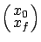
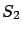
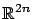
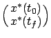
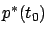
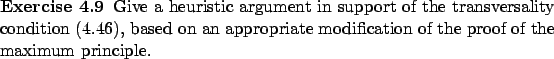

We now want to
mention how the maximum principle can be extended in another direction. We usually
assume that the initial state  is fixed, while the final
state
is fixed, while the final
state  may vary within some set
may vary within some set  . Here, let us briefly
consider the possibility that
. Here, let us briefly
consider the possibility that  may vary as well, so that we
have an initial set instead of a fixed initial state. We can
impose separate constraints on
may vary as well, so that we
have an initial set instead of a fixed initial state. We can
impose separate constraints on  and
and  or, more generally,
we can require that
or, more generally,
we can require that

belong to some surface
in
. The latter formulation allows us to capture situations where there is a joint constraint on
It turns out that this more general set-up can be easily handled
by modifying the transversality condition, which will now involve
the values of the costate both at the initial time and at the
final time. Namely, the transversality condition will now say that
the vector
 must be orthogonal to the
tangent space to
at
must be orthogonal to the
tangent space to
at

:
.
